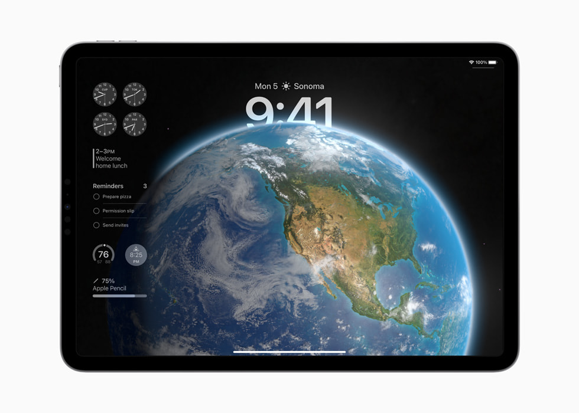
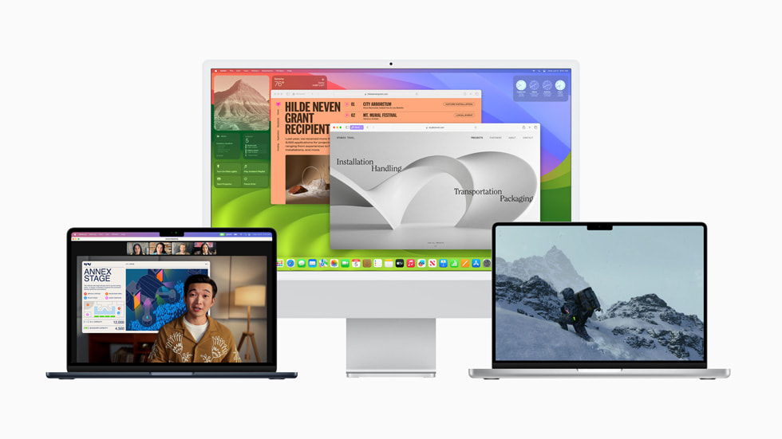

iOS 17:
O novo iOS traz novas possibilidades com o AirDrop permitindo compartilhar documentos e até mesmo seu contato só encostando dois iPhones.
O novo recurso Em Espera permite interagir com apps enquanto o iPhone está na horizontal carregando.
Se torna possível fazer adesivos diretamente da galeria e também foi mostrado o app Diário que você consegue anotar diversas coisas a hora que quiser e somente o usuário verá.
watchOS 10 em destaque em um Apple Watch
watchOS 10:
Foi redesenhada a interface do Apple watch trazendo um novo Conjunto Inteligente
que mostra novos widgets e mostradores também teve atualização nas atividades de ciclismo e trilhas e com o app Atenção Plena permite registrar suas emoções.

iPadOS em um iPad Air
iPadOS 17:
Com o novo iPadOS 17 tem ainda mais opções de personalização na Tela de Bloqueio e uma maior interação com widgets e o app Saúde chegou no
iPad trazendo com ele gráficos especiais para a tela do iPad.

Novo macOS Sonoma rodando em computadores
macOS Sonoma:
O macOS traz melhorias como o novo Modo de Jogo que optimiza os jogos para mac deixando mais fluido e
melhorando a jogabilidade e novos widgets por toda a parte.
tvOS 17 conectado em uma tv e um iPhone
tvOS 17:
Chegou o FaceTime chegou a Apple TV 4K sendo possível assistir filmes em lugares diferentes mas permanecendo conectados com o Split View e também chegou o
Palco Central que você pode se movimentar e continua centralizado.